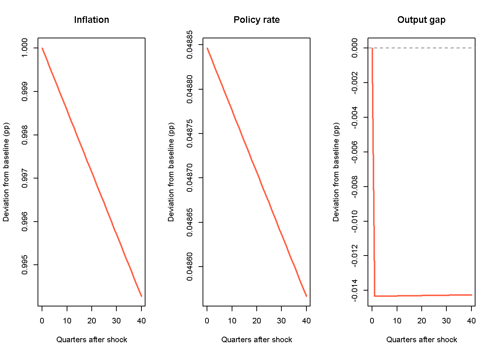

Calibrating a Model with the Method of Simulated Moments
So far, all models on this website have been parameterised by hand without dedicating much attention to empirical accuracy. For example, we may have set the marginal propensity to consume in the Keynesian consumption function (?@eq-islmC) of the ?@sec-islm-model to a value of \(c_1=0.6\) without checking that this value actually generates empirically plausible results.
The present chapter asks: given a model and some real-world data, how can we choose the model’s parameter values so that its simulated data match the empirical data as closely as possible? The technique we use to achieve this is the method of simulated moments (MSM)(Duffie and Singleton 1993; McFadden 1989). The MSM chooses parameters to minimise the distance between a set of data moments (e.g. means, variances, autocovariances, cross-covariances, …) and the same moments computed from the simulated model’s data. To stick with the Keynesian consumption function example, we might use empirical data on the correlation between aggregate output and consumption for an economy of interest to calibrate the marginal propensity, so that the correlation between aggregate output and consumption in the simulated data of the IS-LM model is as close as possible to the empirically observed one.
The MSM is the workhorse estimation method in the agent-based and behavioural macroeconomics literature, which we follow here.1 We illustrate its application with the ?@sec-NK model already covered on this site.2
The method of simulated moments
Let \(m^{emp}\) be a \((n_m \times 1)\) column vector of \(n_m\) moments computed from the data, and let \(m(\theta)\) be the corresponding vector of simulated moments computed from data simulated by the model at parameter vector \(\theta\). Let \(J(\theta)\) be a quadratic loss function that computes the (weighted) sum of squared deviations of the simulated from the empirical moments: \[
J(\theta) = \big[m(\theta)-m^{emp}\big]' \, W \, \big[m(\theta)-m^{emp}\big],
\tag{1}\]
where \(W\) is a \((n_m \times n_m)\) weighting matrix that assigns a weight to each squared deviation in the sum.3
The MSM chooses the parameter vector \(\theta\) so as to minimise the value of the loss function: \[
\hat\theta = \arg\min_\theta \; J(\theta). \qquad
\] The MSM is typically applied to models that do not have a closed-form solution for \(m(\theta)\), the function that describes how the parameters determine the simulated moments. As a result, \(J(\theta)\) does not have a closed-form solution either and needs to be minimised numerically. In practice, this is done by simulating the model many times for different values of the parameter vector \(\theta\), evaluating the loss function for each of those parameterisations, and eventually choosing the parameterisation that gives the lowest value of the loss function. To smooth out noise, the simulated moments are typically computed as averages over multiple Monte Carlo runs for a given parameterisation.
Typically, the theoretically admissible parameter space (i.e. the total number of conceivable parameterisations) is vast – too large to be numerically explored exhaustively. In practice, only a subset of the parameter space will be used to evaluate the loss function. We will discuss below some strategies for exploring the parameter space.
A further practical issue is the choice of which empirical moments to target. Table 1 summarises some of the most commonly used ones, the feature of the data they capture, and when it is useful to include it in the vector of target moments \(m^{emp}\).
Table 1: Common target moments in the MSM
Moment
What it captures
When is it useful
Mean
Average levels
To match the observed level of an individual variable
Variance
Volatility
To match the observed fluctuations of an individual variable
Autocovariance
Persistence
To match how long an observed change in an individual variable lasts
Cross-covariance
Comovement
To match the observed contemporaneous relationship between two variables
Lagged cross-covariance
Dynamic relationships
To match observed lead-lag relationships between two variables
We will illustrate the choice of moments in the applied example below.
A final practical issue concerns the choice of the weighting matrix \(W\). Three common choices, in increasing order of sophistication, are:
Identity weighting\((W=I)\): treats every moment as equally important, but ignores the fact that moments are typically measured with very different precision, may be measured in different units or are naturally at different scales.
Diagonal inverse-variance weighting: use a diagonal \(W\) with entries \(1/\widehat{\mathrm{Var}}(m^{emp}_i)\), so that imprecisely estimated moments or moments at naturally larger scales than others are down-weighted.
Fully efficient weighting\((W=\hat\Omega^{-1})\): uses the inverse of the entire variance-covariance matrix \(\Omega\) of the empirical moments, which is the asymptotically optimal weighting. Takes into account not only the variances of the moments, but also their co-variances.
We will discuss these different options for the weighting matrix in the applied example below.
Applied example: calibrating the New Keynesian 3-equation model
Recall the New Keynesian 3-equation model from Carlin and Soskice (2014) presented in ?@sec-NK:
\[a_3 = \frac{1}{a_1\left(\frac{1}{a_2 b} + a_2\right)} \qquad \text{(monetary policy parameter)},\] where \(y\), \(A\), \(r\), \(\pi\), \(y_e\), \(r_s\), and \(\pi^T\) are real output, autonomous demand, the real interest rate, inflation, equilibrium output, the stabilising real interest rate, and the inflation target, respectively. The parameters \(a_1, a_2\) and \(b\) are the sensitivity of aggregate demand with respect to the interest rate, the sensitivity of the inflation to the output gap, and the sensitivity of the central bank to deviations of inflation from target.
This version of the model is deterministic, it does not contain any random shocks. To calibrate it against noisy real-world macro data, we need to (i) decide which of its parameters are free to calibrate, and (ii) add a stochastic structure so the model actually produces simulated variances and autocorrelations we can compare against data.
Choosing the parameters to be calibrated
A first important question when calibrating a model is which parameters are to be calibrated and which are fixed externally. The 3-equation model has six exogenous parameters/variables: \((A, y_e, \pi^T, a_1,a_2,b)\). We can fix the inflation target externally at a value of 2% followed explicitly or implicitly by many central banks, i.e. \(\pi^T=2\). Setting autonomous demand \(A\) and potential output \(y_e\) to realistic values is less straightforward as these are not directly observable. Suppose we are not interested in reaching empirically realistic average values for output and the real interest rate in levels. Let us thus fix \(A = y_e = 0\), so that \(r_s=0\), and the steady state becomes \((y^*,\pi^*,r^*) = (0, \pi^T, 0)\). This means \(y_t\) and \(r_t\) can be interpreted as gaps with clean empirical counterparts (an output gap and a de-meaned real interest rate). This normalisation implies that the first moments (= means) of \(y,\pi,r\) carry no information about the remaining three free parameters \(a_1,a_2,b\) and should not be used as target moments. Instead, we will only use variances, autocovariances, and cross-covariances to identify them.
Next, we need to introduce stochasticity to the model. To this end, three shocks are added, one per equation - a demand shock in the IS curve, a cost-push shock in the Phillips curve, and a monetary-policy shock in the policy rule. Along with the aforementioned parameter restrictions, this gives the following stochastic version of the 3-equation model:
where we let the demand shock \(\varepsilon_{d,t}\) follow an AR(1) process so as to introduce some persistence, which is a common property of macroeconomic time series. The other shocks are assumed to be i.i.d. for simplicity and to save on parameters. The shock processes contain the parameters \(\rho_d, \sigma_d, \sigma_s,\) and \(\sigma_m\), which are the autocorrelation coefficient of the demand shock, and the standard deviations of the demand, inflation, and monetary policy shocks, respectively.
This gives \(n_p=7\) free parameters to be calibrated: \(\theta = (a_1, a_2, b, \rho_d, \sigma_d, \sigma_s, \sigma_m)\), with stability requiring \(a_1,a_2,b>0\) and \(|\rho_d|<1\).
Data and empirical moments
The next important step is to choose an appropriate set of empirical moments. The number of moments should generally be at least as large as the number of parameters \((n_m \geq n_p)\). The key variables in the 3-equation model are the output gap, the inflation rate, and the policy rate. We will use their variances, first-order autocovariances, and contemporaneous cross-covariances, giving 9 target moments to calibrate 7 parameters. We will use data for the US economy.
To construct an empirical measure of the output gap, we use the Hamilton regression filter (Hamilton (2018)).4 It regresses \(y_{t+h}\) on a constant and \(p\) lags \(y_t,\dots,y_{t-p+1}\), yielding regression residuals that represent the cyclical component. We use the standard settings for quarterly data of \(h=8\) and \(p=4\).
Inflation is annualised quarter-on-quarter core PCE inflation, and the real policy rate is the quarterly-averaged effective federal funds rate minus inflation, de-meaned so its sample mean is exactly zero (matching the normalised steady state of \(r^*=0\)). We restrict the sample to 1996Q1-2007Q4 to focus on the Fed’s de facto 2% inflation-targeting era and to exclude the post-2008 zero-lower bound period, where the policy rate was not really reacting to inflation in the sense the model assumes.
The first block of code fetches the relevant US time series data from Fred and constructs the desired series (output gap, inflation rate, and de-meaned real policy rate).
# Clear the environmentrm(list =ls())# Load relevant librarieslibrary(quantmod)
Loading required package: xts
Loading required package: zoo
Attaching package: 'zoo'
The following objects are masked from 'package:base':
as.Date, as.Date.numeric
Loading required package: TTR
Registered S3 method overwritten by 'quantmod':
method from
as.zoo.data.frame zoo
library(xts)library(zoo)# Suppress an unnecessary warningoptions(xts.message.period.apply.mean =FALSE)# Set desired sample periodsample_start =as.yearqtr("1996 Q1")sample_end =as.yearqtr("2007 Q4")# Pull relevant series from Fred (real GDP, CPI, nominal federal funds rate) getSymbols(c("GDPC1", "PCEPILFE", "FEDFUNDS"), src ="FRED")
[1] "GDPC1" "PCEPILFE" "FEDFUNDS"
# Align the three series to quarterly frequency and drop missing valuesgdp =na.omit(GDPC1) pcepilfe =apply.quarterly(na.omit(PCEPILFE), mean) # monthly -> quarterly averagefedfunds =apply.quarterly(na.omit(FEDFUNDS), mean) # monthly -> quarterly average# Put together data frame with the raw seriesdata_raw =data.frame(qtr =as.yearqtr(index(gdp)), gdp =as.numeric(gdp))data_raw =merge(data_raw, data.frame(qtr =as.yearqtr(index(pcepilfe)),pcepilfe =as.numeric(pcepilfe)), by ="qtr", all =TRUE)data_raw =merge(data_raw, data.frame(qtr =as.yearqtr(index(fedfunds)),fedfunds =as.numeric(fedfunds)), by ="qtr", all =TRUE)data_raw = data_raw[order(data_raw$qtr), ]# Write function to apply the Hamilton filter and return the cyclical component# NB: need to check which possible regression observations have no missing or infinite valueshamilton_filter =function(y, h =8, p =4) { n =length(y) t_all = p:(n - h) valid =sapply(t_all, function(tt) all(is.finite(c(y[tt + h], y[(tt - p +1):tt])))) t = t_all[valid] X =cbind(1, sapply(0:(p -1), function(j) y[t - j])) model =lm(y[t + h] ~ X -1) cycle =rep(NA_real_, n) cycle[t + h] =residuals(model) cycle}# Put together data frame for the transformed seriesdata_transformed =data.frame(qtr = data_raw$qtr)data_transformed$y =100*hamilton_filter(log(data_raw$gdp)) # output gapdata_transformed$pi =400*c(NA, diff(log(data_raw$pcepilfe))) # annualised inflationdata_transformed$r = data_raw$fedfunds - data_transformed$pi # real policy rate# Restrict to the desired sample period and remove missing valuesdata_transformed = data_transformed[data_transformed$qtr >= sample_start & data_transformed$qtr <= sample_end, ]data_transformed =na.omit(data_transformed)# Demean the real policy ratedata_transformed$r = data_transformed$r -mean(data_transformed$r)
Next, we write a function to compute the nine desired empirical moments from the \(y\), \(\pi\), and \(r\) series:
# Write function that computes the nine desired moments from y, pi, and r seriescompute_moments =function(mat) { y = mat[, "y"]; pi = mat[, "pi"]; r = mat[, "r"] n =nrow(mat)c(var_y =var(y),var_pi =var(pi),var_r =var(r),ar1_y =cov(y[2:n], y[1:(n -1)]),ar1_pi =cov(pi[2:n], pi[1:(n -1)]),ar1_r =cov(r[2:n], r[1:(n -1)]),cov_y_pi =cov(y, pi),cov_y_r =cov(y, r),cov_pi_r =cov(pi, r) )}# Convert the empirical series to a matrix and apply function to compute empirical momentsts_data =as.matrix(data_transformed[, c("y", "pi", "r")])obs_moments_raw =compute_moments(ts_data)# Print rounded momentsround(obs_moments_raw, 2)
Next, we write a function that simulates the stochastic version of the model. The function takes as arguments the parameter vector \((\theta)\), the desired time horizon of the simulation (T_sim), and a chosen “burn-in” period of initial data points that will be discarded (burnin). Three further arguments will specify the desired implementation of a manual shock scenario that will be used later to create illustrative impulse response function. By setting burnin=NULL, we can ignore these arguments for now.
# Set inflation target externallypt =2# Define function to simulate the modelsimulate_model =function(theta, T_sim =300, burnin =100,shock_t =NULL, shock_size =0, shock_eq ="d") {# Assign parameter values from parameter vector to individual parameters a1 = theta[1] a2 = theta[2] b = theta[3] rho_d = theta[4] sigma_d = theta[5] sigma_s = theta[6] sigma_m = theta[7] a3 = (a1 * (1/ (a2 * b) + a2))^(-1)# Create vectors that will contain the simulated data y =numeric(T_sim); p =numeric(T_sim); r =numeric(T_sim); eps_d =numeric(T_sim)# create shock processes mu_d =rnorm(T_sim, 0, sigma_d) shock_s =rnorm(T_sim, 0, sigma_s) shock_m =rnorm(T_sim, 0, sigma_m)# Create (optional) additional shock scenario (will later be used to generate IRF)if (!is.null(shock_t)) {if (shock_eq =="d") mu_d[shock_t] = mu_d[shock_t] + shock_sizeif (shock_eq =="s") shock_s[shock_t] = shock_s[shock_t] + shock_sizeif (shock_eq =="m") shock_m[shock_t] = shock_m[shock_t] + shock_size }# Initialise at steady state y[1] =0; p[1] = pt; r[1] =0# Simulatefor (t in2:T_sim) { eps_d[t] = rho_d * eps_d[t-1] + mu_d[t] # AR(1) demand shock y[t] =-a1 * r[t -1] + eps_d[t] # IS curve, A=0 p[t] = p[t -1] + a2 * y[t] + shock_s[t] # Phillips curve, ye=0 r[t] = a3 * (p[t] - pt) + shock_m[t] # Policy rule, rs=0 }# Return simulated data for the chosen simulation period res =cbind(y = y, p = p, r = r)return(res[(burnin +1):T_sim, ])}
Then we define another function that computes the simulated moments for a given parameterisation as averages over \(MC\) Monte Carlo runs (which we set to \(MC=50\) here). By averaging the moments over multiple runs, we reduce sensitivity of the results to outlier values. Note that we fix a random seed inside the sim_moments() function, so it resets to the same reproducible sequence of random numbers every time the function is called - which will happen repeatedly below when we simulate the model for different parameterisations. This means that while every individual Monte Carlo run performed via the simulate_model function is based on different random values for the shocks, the sequence of Monte Carlo runs performed for every parameterisation uses the same underlying sequence of shocks; only the parameterisation changes what happens to them. This approach keeps the loss function comparable and smooth across evaluations.
# Write function that computes simulated moments as Monte Carlo averagessim_moments =function(theta, MC =50) {# fix random seedset.seed(123) # create matrix in which simulated moments will be stored all_moms =matrix(NA, MC, 9) for (s in1:MC) { # Monte Carlo loop sim_data =simulate_model(theta) y_s = sim_data[, "y"]; p_s = sim_data[, "p"]; r_s = sim_data[, "r"] n =nrow(sim_data)# Compute simulated moments all_moms[s, ] =c(var(y_s), var(p_s), var(r_s),cov(y_s[2:n], y_s[1:(n -1)]),cov(p_s[2:n], p_s[1:(n -1)]),cov(r_s[2:n], r_s[1:(n -1)]),cov(y_s, p_s), cov(y_s, r_s), cov(p_s, r_s) ) } # close loop# Return moments moms =colMeans(all_moms, na.rm =TRUE)if (any(!is.finite(moms))) return(rep(1e6, 9))return(moms)}
Loss function
Then we define a function that computes the value of the loss function (Equation 1) for a given set of parameters \(\theta\) and a weighting matrix \(W\) that need to be supplied as arguments to the function:
# Define function that compute the value of the loss functionobjective =function(theta, Wmat) { sim_moms =sim_moments(theta)if (any(!is.finite(sim_moms))) return(1e10) diff = sim_moms - obs_moments_rawas.numeric(t(diff) %*% Wmat %*% diff)}
Exploring the parameter space
A key challenge when using a numerical solution method like the MSM is to decide on a procedure for how to explore the, typically vast, parameter space. We will tackle this problem in two ways. First, we utilise R’s general-purpose numerical minimiser, optim(). This is not specifically designed for the MSM - it just repeatedly evaluates whatever objective function you supply at different trial parameter vectors, and searches for the one that returns the smallest number. Here we use method="L-BFGS-B", a quasi-Newton algorithm: at each trial point it numerically approximates the gradient — the local slope of the objective function, i.e. how much the loss would change if each parameter were nudged up or down slightly, and in which direction that loss decreases fastest. It then uses accumulated gradient information to approximate the objective function’s local curvature to decide which parameterisation to evaluate next. The optim() function takes as arguments two constraints (lower/upper) that specify the admissible min and max values for each parameter. Specifying these bounds also allows us to enforce \(a_1,a_2,b>0\) and \(|\rho_d|<1\), which we require to ensure stability of the stochastic version of the 3-equation model.
Two things are worth flagging about optim(). First, it returns a convergence code: 0 means it believes it stopped at a genuine local minimum, while nonzero codes flag a problem. Second, and more importantly: optim() is a local search. It has no way of knowing whether the minimum it finds is the best one available, or just the closest one to wherever it started. Consequently, the result might be sensitive to the initial parameterisation that needs to be supplied to the function.
This brings us to the second way in which we will tackle the parameter choice problem. In a robustness test, which we perform below, we will not only consider one initial parameterisation, but many that are sampled from a parameter grid. This allows us to assess the sensitivity of the optimal parameterisation to the initial values, and to potentially find better parameterisations.
Taking a first shot at the calibration
For our first shot at the calibration, we will use a simplified approach. First, we will start the minimisation algorithm from only a single initial parameterisation. Second, we will use identity weighting in the loss function, i.e. we will set \(W=I\). This will produce a tentative “optimal” parameterisation. We will then refine our approach to see if it yields a different, potentially better, parameterisation.
# Define an initial parameterisationtheta_start =c(a1 =0.3, a2 =0.7, b =1, rho_d =0.5,sigma_d =0.3, sigma_s =0.3, sigma_m =0.3)# Define lower and upper bounds for the admissible parameter valuesbounds_lower =c(0.01, 0.01, 0.01, -0.99, 0.001, 0.001, 0.001)bounds_upper =c(2, 2, 5, 0.99, 5, 5, 5)# Set up an identity weighting matrixW_identity =diag(length(obs_moments_raw)) # Run minimisation algorithm on loss functionfit_id =optim(theta_start, function(th) objective(th, W_identity),method ="L-BFGS-B",lower = bounds_lower, upper = bounds_upper,control =list(maxit =1000, factr =1e12, pgtol =1e-3))# Print fitcat("Convergence:", fit_id$convergence, " Objective:", round(fit_id$value, 4), "\n")
Before evaluating the goodness of fit of this tentative parameterisation, let us check if we’d get a different result when using a different weighting matrix.
Taking a second shot with a diagonal weighting matrix
Next, we re-run the calibration using a more sophisticated version of the weighting matrix \(W\). To weight moments by how precisely they are estimated, we need to estimate the variance-covariance matrix, \(\Omega\), of the empirical moments. We estimate \(\Omega\) with a block bootstrap of the empirical data, using the tsboot() function from R’s boot package. Rather than resampling individual quarters independently, a block bootstrap resamples (with replacement) contiguous blocks of quarters, which preserves the autocorrelation in the data. We use the specification sim="geom", which draws blocks of random (geometrically distributed) length rather than a single fixed length, with a mean block length of l=8 quarters (= two years). We perform R=5000 bootstrap replications.
Note that in order to call the tsboot() function, we need to supply a function as an argument that computes the statistics that are to be bootstrapped. For this, we re-use the previously created compute_moments function.
library(boot)# Set random seed for reproducibiliyset.seed(123)# Create a bootstrap sample of the momentsboot_out =tsboot(ts_data, compute_moments, R =5000, l =8, sim ="geom")# Save bootstrap sample as a matrixboot_moms = boot_out$tcolnames(boot_moms) =names(obs_moments_raw)# Compute variance-covariance matrix of the bootstrapped moments sampleOmega_boot =cov(boot_moms)# Print estimated standard errors of the momentsround(sqrt(diag(Omega_boot)), 2)
Having obtained an estimate for the variance-covariance matrix \(\hat{\Omega}\) of the moments, we re-run the calibration using diagonal inverse-variance weighting, where \(W\) is a diagonal matrix with entries \(1/\widehat{\mathrm{Var}}(m^{emp}_i)\), i.e. the inverse of the main diagonal of \(\hat{\Omega}\).5 Note that we use the previously calibrated optimal parameter vector as an initialisation for the minimisation algorithm.
It can be seen that the diagonal weighting matrix does give a different optimal parameter vector. However, this difference might also stem from having used a different initialisation from which the algorithm may have converged to a different local minimum. As a final exercise, before we evaluate the fit of the different candidate parameterisations, we will run the minimisation algorithm for different initialisation.
Taking a third shot with multiple initialisations
Recall that optim() only explores the basin closest to the initial paremeterisation that is being supplied. To check whether that basin is a genuine (near-)global optimum, we draw a space-filling set of starting points with Latin Hypercube Sampling (LHS): stratify each parameter’s range into equal-probability bins, take exactly one random draw per bin, then randomly pair bins across parameters. This covers the 7-dimensional parameter space more evenly than independent uniform draws would, which could easily leave whole regions unsampled by chance. We draw a sample of size 30 with randomLHS() from R’s lhs package, which returns a sample on the unit hypercube \([0,1]^7\). We then use qunif() to rescale each column to the parameter’s chosen bounds. We also append theta_id and theta_diag to the set of starting points (so that the search is guaranteed to yield a parameterisation that is at least as good as the ones we already found). The optim() function is then re-run for every starting sample, keeping the best result. We continue to use the diagonal weighting matrix in the loss function.
library(lhs)# Set random set for reproducibilityset.seed(6)# Set number of parameter samples and save number of parametersN_starts =30n_par =length(theta_id)# Draw a Latin Hypercube sample on the unit hypercubelhs_unit =randomLHS(N_starts, n_par)# Rescale each column to the corresponding parameter's chosen bounds defined previouslylhs_starts = lhs_unitfor (j in1:n_par) { lhs_starts[, j] =qunif(lhs_unit[, j], bounds_lower[j], bounds_upper[j])}colnames(lhs_starts) =names(theta_id)# Append the two parameterisations already found (theta_id, theta_diag) as two more# starting pointsall_starts =rbind(lhs_starts, theta_id = theta_id, theta_diag = theta_diag)N_all =nrow(all_starts)# Create a matrix that will contain the optimal parameterisation for each startmultistart_par =matrix(NA, N_all, length(theta_id))colnames(multistart_par) =names(theta_id)# Create a matrix that will contain the associated value of the loss functionmultistart_obj =rep(NA, N_all)# Calibrate for each startfor (i in1:N_all) { fit_i =tryCatch(optim(all_starts[i, ], function(th) objective(th, W_opt_diag),method ="L-BFGS-B", lower = bounds_lower, upper = bounds_upper,control =list(maxit =1000, factr =1e12, pgtol =1e-3)),error =function(e) NULL )if (!is.null(fit_i)) { multistart_par[i, ] = fit_i$par multistart_obj[i] = fit_i$value }}# Find and print parameterisation that minimises loss functionbest_i =which.min(multistart_obj)round(rbind(single_start =c(theta_diag, obj = fit_diag$value),lhs_best =c(multistart_par[best_i, ], obj = multistart_obj[best_i])), 4)
It turns out that parameterisation found earlier using a single initialisation had already found the best fit available: the best of the 32 starts (objective \(\approx\) 36) lands at essentially the same point as theta_diag itself, up to negligible numerical noise. This will not always be the case - as discussed above, optim() gives no guarantee of finding a global optimum - so this robustness check is still worth doing.
Comparing the fit of the candidate parameterisations
Since the search across multiple initialisations returned the same parameterisation as the single diagonal-weighting run, we are left with two distinct candidates to compare - identity weighting and diagonal weighting. Let’s compare them by checking how closely each one’s simulated moments match their empirical counterparts. We will assess the empirical fit by (i) checking whether the simulated moment has the same sign as its empirical counterpart, (ii) the percent deviation of the simulated from the empirical moment, and (iii) a moment missing rate (MMR), proposed by Franke (2022), defined as a moment’s deviation from its empirical counterpart as a percentage of the moment’s bootstrapped confidence interval.6
The sign match is a useful piece of qualitative information on whether the model gets the direction of a relationship right. While the percent deviation is an intuitive quantitative measure, it may not be directly comparable across moments: it blows up for a moment whose empirical value is close to zero (e.g. cov_y_pi), and it does not distinguish a large miss on a precisely-estimated moment from an equally large miss on a very noisily-estimated one. The MMR addresses these issues. A value of 0 is a perfect match; below 100 means the simulated moment falls inside the empirical 95% confidence interval (obs\(\pm\)2*SE); above 100 means it falls outside.
# Name the best LHS-seeded parameterisation, alongside theta_id and theta_diag# (kept for the counterfactual-scenario section below, even though it turns out to# coincide with theta_diag here)theta_lhs =setNames(multistart_par[best_i, ], names(theta_id))# Compute simulated moments under each of the two parameterisationssim_id =sim_moments(theta_id)sim_diag =sim_moments(theta_diag)# Retrieve bootstrapped standard error of each momentse_boot =sqrt(diag(Omega_boot))# Define function to build goodness-of-fit table for each parameterisationgof_table =function(sim, obs, se) {data.frame(moment =names(obs),empirical =round(obs, 3),simulated =round(sim, 3),sign_match =sign(sim) ==sign(obs),pct_dev =round(100* (sim - obs) / obs, 1),mmr =round(100*abs(sim - obs) / (2* se), 1),row.names =NULL )}# Call functiontable_identity =gof_table(sim_id, obs_moments_raw, se_boot)table_diagonal =gof_table(sim_diag, obs_moments_raw, se_boot)
suggesting that the diagonal weighting matrix overall delivers the better fit. Looking at the fit of the individual moments, we see that variances of \(r\) and \(y\), and the auto-covariance of \(y\) are matched quite well. The match for the covariance of \(y\) and \(\pi\) is also relatively decent. By contrast, the match for the variance of \(\pi\) is poor, and also for the auto-covariances of \(\pi\) and \(r\), the latter even getting the sign wrong. Recall that we are not using AR(1) process for \(\pi\) and \(r\), which might partly explain this poor fit. The cross-covariances are also matched relatively poorly, with simulated moments being outside of the 95% confidence band and the simulated covariance between \(y\) and \(\pi\) exhibiting the wrong sign.
Overall, this suggests that there is room for improvement when it comes to calibrating the 3-equation model. One might want to consider a different set of moments (e.g. lagged auto-covariances), a different sample period, using different shock processes in the model, or even re-considering the lag structure assumed by the model. We will discuss some more general caveats below.
Analysing a cost-push shock with the calibrated model
A natural use of a calibrated model is to trace out its predicted response to a shock via an impulse response function (IRF). Here we consider a cost-push shock by perturbing the \(\varepsilon_{s,t}\) term in the Phillips curve by one percentage point.7 We then assess how \(\pi_t, r_t, y_t\) evolve relative to their otherwise identical unshocked path.
# Select optimal parameter vectortheta_eff =if (multistart_obj[best_i] < fit_diag$value) theta_lhs else theta_diagH =40# horizon, in quarters after the shockshock_period =5# quarter (within the simulated window) the shock hits# Use the previously generated simulation function to simulate the model once with and once with shock set.seed(42); sim_base =simulate_model(theta_eff, shock_size =0)set.seed(42); sim_shock =simulate_model(theta_eff, shock_size =1,shock_t =100+ shock_period, shock_eq ="s")# Compute impulse response as the deviation of the shocked path from the (otherwise# identical) baseline path, indexed in quarters since the shock hithorizon =0:Hirf_p = sim_shock[shock_period + horizon, "p"] - sim_base[shock_period + horizon, "p"]irf_r = sim_shock[shock_period + horizon, "r"] - sim_base[shock_period + horizon, "r"]irf_y = sim_shock[shock_period + horizon, "y"] - sim_base[shock_period + horizon, "y"]# Plot IRFspar(mfrow =c(1, 3))plot(horizon, irf_p, type ="l", lwd =2, col ="tomato",xlab ="Quarters after shock", ylab ="Deviation from baseline (pp)", main ="Inflation")abline(h =0, lty =2, col ="grey50")plot(horizon, irf_r, type ="l", lwd =2, col ="tomato",xlab ="Quarters after shock", ylab ="Deviation from baseline (pp)", main ="Policy rate")abline(h =0, lty =2, col ="grey50")plot(horizon, irf_y, type ="l", lwd =2, col ="tomato",xlab ="Quarters after shock", ylab ="Deviation from baseline (pp)", main ="Output gap")abline(h =0, lty =2, col ="grey50")

Impulse responses to a 1-percentage-point inflationary (cost-push) shock
Inflation jumps by the full size of the shock on impact and then starts to fall, but extremely slowly.8 This is a direct reflection of the calibrated parameter value of \(a_2=0.01\) in the Phillips curve: with the estimated sensitivity of inflation to the output gap being very low while inflation expectations are strongly adaptive, it takes extremely long for inflation to return to target. The policy rate does move in the right direction - the central bank raises \(r\), which lowers \(y\), which should help pull inflation back down - but both responses are tiny and just as persistent as the inflation shock itself. The soft monetary policy response is due to the relatively low value of \(a_3 = \frac{1}{a_1\left(\frac{1}{a_2 b} + a_2\right)} \approx \frac{1}{0.29\left(\frac{1}{0.01 \times 1.43} + 0.01\right)} \approx 0.05\) in the monetary policy reaction function. While the central bank cares relatively strongly about inflation \((b=1.43)\), it knows that the reaction of inflation to output is weak. As a result, it is not willing to fight inflation more aggressively as it would require the creation of a large output gap. Thus, with a weak link between the output gap and inflation and a relatively weak monetary policy response, even a sustained increase in \(r\) leaves the shock largely unaddressed over any horizon of practical interest.
Caveats
Beyond the specific fit problems already discussed, our exercise illustrates some more general limitations of the MSM worth keeping in mind.
Moments are correlational, not causal. The MSM identifies parameters from unconditional variances and (cross-)covariances - purely descriptive statistical objects that carry no information about a causal direction on their own. By contrast, the parameters that are to be calibrated, e.g. the response of inflation to the output gap, \(a_2>0\), represent theoretically assumed causal effects. An empirically measured moment such as the cross-covariance between \(y\) and \(\pi\) is driven by all sorts of confounding shocks that occurred during the sample period. A positive cost-shock, for example, may generate a negative correlation between \(y\) and \(\pi\), whereas a positive demand shock may yield a positive one. It is thus far from obvious that the empirically observed correlation is sufficient for pinning down the causal effect of \(y\) on \(\pi\), represented by \(a_2>0\).
The choice of moments is itself a source of arbitrariness. It is a priori unclear, which are the best moments to choose to calibrate a given set of parameters. There is no uniquely correct set of moments to target, so any statement about a calibrated parameter is implicitly conditional on the particular moments (and weights) chosen. A different set of target moments may lead to a different set of calibrated parameters.
A poor fit does not diagnose its own cause. When a moment is badly matched, it is not obvious what the source of the poor fit is: a genuinely misspecified causal structure, weak identification (several very different parameterisations fitting about equally well), and sampling noise from a small or structurally unstable sample are all consistent with the same symptom. Telling them apart takes economic judgement beyond what the fitted moments alone can offer.
Summary and discussion
The Method of Simulated Moments (MSM) is a relatively easy-to-implement numerical method to calibrate the parameters of a model to empirical data. We have seen that calibrating even a small, well-known model raises difficult practical choices at every step: which empirical moments meaningfully identify which parameters; how to add an appropriate stochastic structure to the model; how to weight moments of very different precision and scale; and how to check that a numerical optimiser has actually found a good answer rather than a nearby one. Every one of these choices requires experimentation combined with careful reasoning. Unfortunately, many of the underlying questions do not have an obvious or objectively correct answer and require making judgement calls. This is why transparency and reproducibility are important: documenting and explaining each step carefully, so that other researchers can scrutinise and build on it. Below we give a simple recipe for implementing the method in practice – bearing in mind that some flexibility and independent reasoning is required at each step.
A key conclusion from our illustrative calibration of the simple 3-equation model against moments from US data over the period 1996 to 2007 is that the calibrated model does a mixed job at producing meaningful results. Put bluntly, it predicts a quasi permanent response to a one-off inflationary cost-push shock that the central bank is neither able nor willing to fight via contractionary monetary policy. While the 2021-23 inflation episode did involve a sustained increase in inflation, it also prompted a relatively aggressive response by many central banks. To what extent it was this monetary policy response rather than a change in the underlying drivers of inflation that brought inflation down is open to debate – however, inflation largely did stabilise again.
Unfortunately, the calibration exercise as such is silent on the question why the calibrated model generates a relatively implausible result. The culprit could lie in the way the model was calibrated or the model itself, or both. For example, a different data set, a different set of target moments, a different weighting matrix, and possibly even a different minimisation algorithm might yield a very different, possibly better, parametrisation of the model. At the same time, a different specification for the stochastic elements of the model, a different lag structure in the model (e.g. in the IS and/or Phillips curve) or a different assumption about inflation expectation formation might yield a better fit with the data. While this is perhaps not an entirely satisfactory conclusion, it shows that calibrating a model yields a lot of food for thought for further refinements of the model.
A simple recipe for calibrating economic models with the MSM
Add a minimal stochastic structure to the model.
Choose the free parameters of the model to be calibrated (i.e. those not already pinned down by a normalisation or fixed on other grounds).
Choose target moments that are informative about the free parameters (at least as many moments as free parameters, i.e. \(n_m \geq n_p\)).
Compute the chosen moments in the empirical data as well as in simulated model data, averaging the latter over many Monte Carlo runs.
Choose a weighting matrix for the loss function
Minimise the loss function numerically, e.g. using R’s optim() function, restricting the search to a region of the parameter space that is economically plausible.
Assess the fit of the calibrated model along several dimensions (e.g. whether the model matches the sign of each moment, percent deviations, moment-missing-rates).
Check the robustness of the numerical solution (e.g. by multiple starting values for the minimisation algorithm, sample selection, data transformations, target moments, …)
Interrogate a poor fit or implausible parameter estimate (do they reflect problems with the data, methodology, or theoretical model?).
References
Carlin, Wendy, and David Soskice. 2014. Macroeconomics. Instititions, Instability, and the Financial System. Oxford University Press.
Duffie, Darrell, and Kenneth J. Singleton. 1993. “Simulated Moments Estimation of Markov Models of Asset Prices.”Econometrica 61 (4): 929–52. https://doi.org/10.2307/2951768.
Franke, Reiner. 2018. “Competitive Moment Matching of a New-Keynesian and an Old-Keynesian Model.”Journal of Economic Interaction and Coordination 13: 201–39. https://doi.org/10.1007/s11403-016-0181-0.
Franke, Reiner. 2022. “An Empirical Test of a Fundamental Harrod-Kaldor Business Cycle Model.”Structural Change and Economic Dynamics 60: 1–14. https://doi.org/10.1016/j.strueco.2021.11.001.
Franke, Reiner, and Frank Westerhoff. 2012. “Structural Stochastic Volatility in Asset Pricing Dynamics: Estimation and Model Contest.”Journal of Economic Dynamics & Control 36 (8): 1193–211. https://doi.org/10.1016/j.jedc.2011.10.004.
Hamilton, James D. 2018. “Why You Should Never Use the Hodrick-Prescott Filter.”The Review of Economics and Statistics 100 (5): 831–43. https://doi.org/10.1162/rest_a_00706.
McFadden, Daniel. 1989. “A Method of Simulated Moments for Estimation of Discrete Response Models Without Numerical Integration.”Econometrica 57 (5): 995–1026. https://doi.org/10.2307/1913621.
Reissl, Severin. 2020. “Minsky from the Bottom up – Formalising the Two-Price Model of Investment in a Simple Agent-Based Framework.”Journal of Economic Behavior & Organization 177: 109–42. https://doi.org/10.1016/j.jebo.2020.06.012.
Wildauer, Rafael, Karsten Kohler, Adam Aboobaker, and Alexander Guschanski. 2023. “Energy price shocks, conflict inflation, and income distribution in a three-sector model.”Energy Economics 127B. https://doi.org/10.1016/j.eneco.2023.106982.
Footnotes
See Franke and Westerhoff (2012), Franke (2018), Franke (2022), Reissl (2020), and Wildauer et al. (2023) for some applications.↩︎
Franke (2018) is particularly close to the current chapter, but considerably more ambitious: he uses the MSM to compare a richer version of the New Keynesian model to a sentiment-driven Old-Keynesian model of business optimism and pessimism, matching up to 78 moments.↩︎
A mathematically equivalent representation of Equation 1 is \[
J(\theta) = \sum_{i=1}^{n_m}w_i\big[m_i(\theta)-m_i^{emp}\big]^2\], where \(i\) indexes the \(i=1,..,n_m\) moments.↩︎
Alternatively, we could use the CBO’s GDPPOT potential-GDP series, which is a model-based estimate.↩︎
We leave the exploration of \(W=\hat{\Omega}^{-1}\) as an exercise to the reader.↩︎
We compute this as \(\text{MMR}_i = \frac{100 \cdot |m_i - m_i^{emp}|}{2 \cdot SE_i}\), where \(SE_i\) is the bootstrapped standard error of moment \(i\).↩︎
Since the model is linear, the response to any other shock size is simply a rescaled version of this one - e.g. the response to a shock half this size is half as large.↩︎
The very long adjustment period can also be shown more formally. In ?@sec-analytical-NK, we show that the model’s single eigenvalue is given by \(\lambda = 1 - a_1 a_2 a_3\). With the calibrated parameters, this evaluates to \(\lambda \approx 0.9999\), i.e. a near unit-root.↩︎